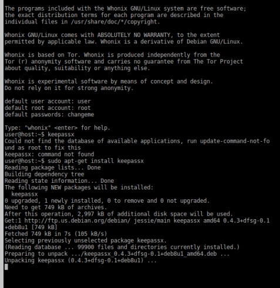
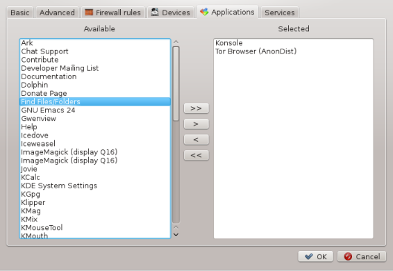
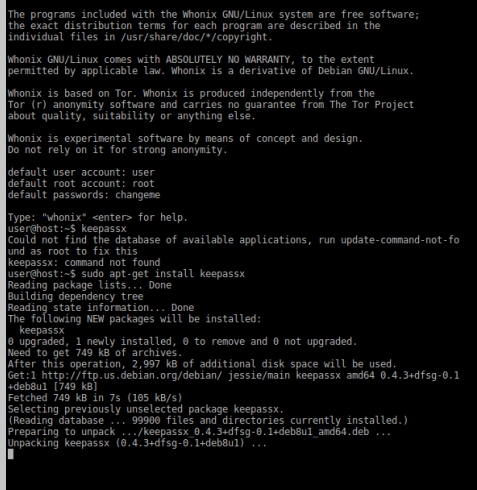
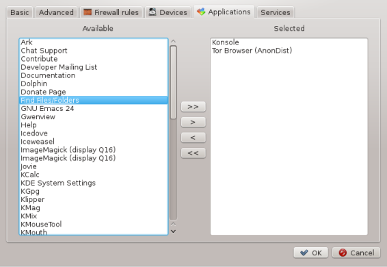

recently installed fresh qubes-whonix , the ws has 2 missing things:-
keepassX

and file path (only searching for files is there but not the files shortcut)

is this meant to be like this ?

recently installed fresh qubes-whonix , the ws has 2 missing things:-
keepassX

and file path (only searching for files is there but not the files shortcut)

is this meant to be like this ?
Does it also happen in a Qubes Debian template?
nope it doesnt , both of them r there (keepassx and files path shortcut)
same happening with whonix 13
We do not yet install a password manager by default. Development discussion:
Are you sure this is a keepass2 and Whonix issue only?
Did you install during this test keepass2 inside the AppVM or TemplateVM?
As far I know, shortcuts are only added if you install packages in the TemplateVM, shut down the TemplateVM (and perhaps reboot the AppVM). @adw
Are you sure this is a keepass2 and Whonix issue only?
yeah sure
Did you install during this test keepass2 inside the AppVM or TemplateVM?
yep i did
As far I know, shortcuts are only added if you install packages in the
TemplateVM, shut down the TemplateVM (and perhaps reboot the AppVM).
correct , thats regarding keepassx. but how about “Files” ? this is something not install-able.
btw did u removed dolphin from whonix ? because if thats so , then thats the reason there is no “files” as a shortcut.
You guys are talking past each other!
@TNT_BOM_BOM
"Files" is the launcher for the Gnome File Manager, also known as Nautilus. It is not installed by default in Whonix 13. (You can install it if you like, but it will require many dependencies). Dolphin is installed in Whonix 13 and is called “Dolphin”, not “Files”.
yeah correct , dolphin replaced “files” shortcut in whonix 12 , 13.
but this is not the case when i have used whonix 11 with qubes
the shortcut for entering the system path is “files” same as the rest of Qubes official templates/appvms.all having “files” as its own shortcuts to enter the system paths.